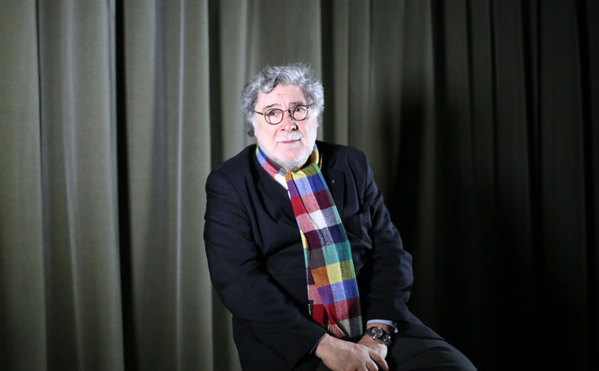

Étienne Robial, né le 20 novembre 1945 à Rouen, est un éditeur de bande dessinée, graphiste et directeur artistique français. Comme éditeur, il est connu pour avoir animé avec Florence Cestac de 1974 au début des années 1990 la maison d'édition Futuropolis, qui a joué un rôle déterminant dans l'évolution de la bande dessinée d'auteur francophone.

Etienne Robial
Directeur artistique, graphiste, éditeur
"C'est canal, on n'a pas de compte à rendre, faut que le pognon rentre, il faut que les abonnés s'inscrivent. Au début il n'y en a pas beaucoup"